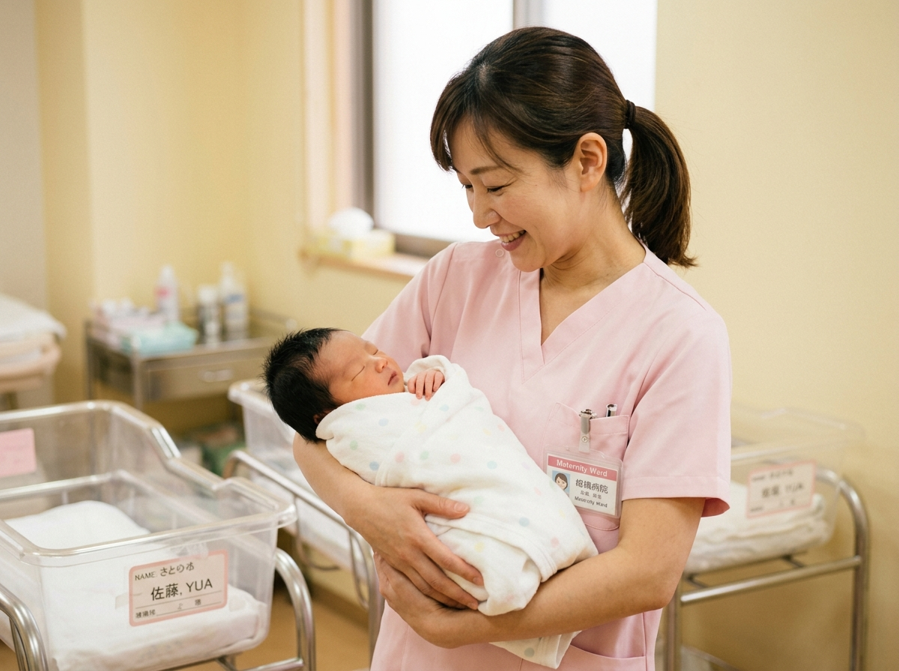
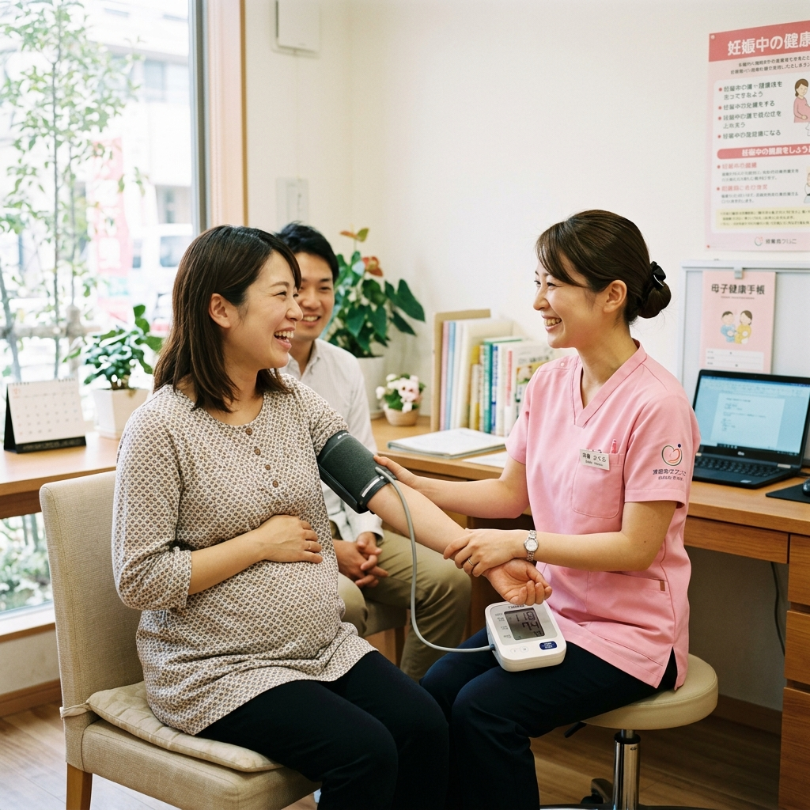
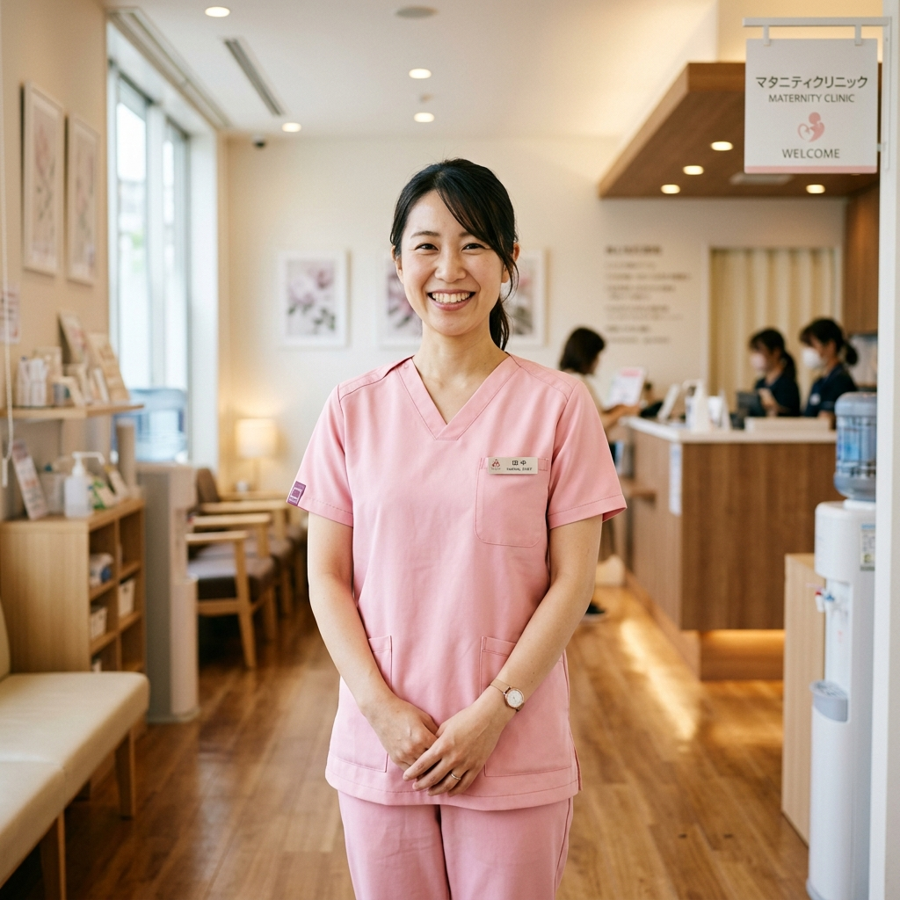
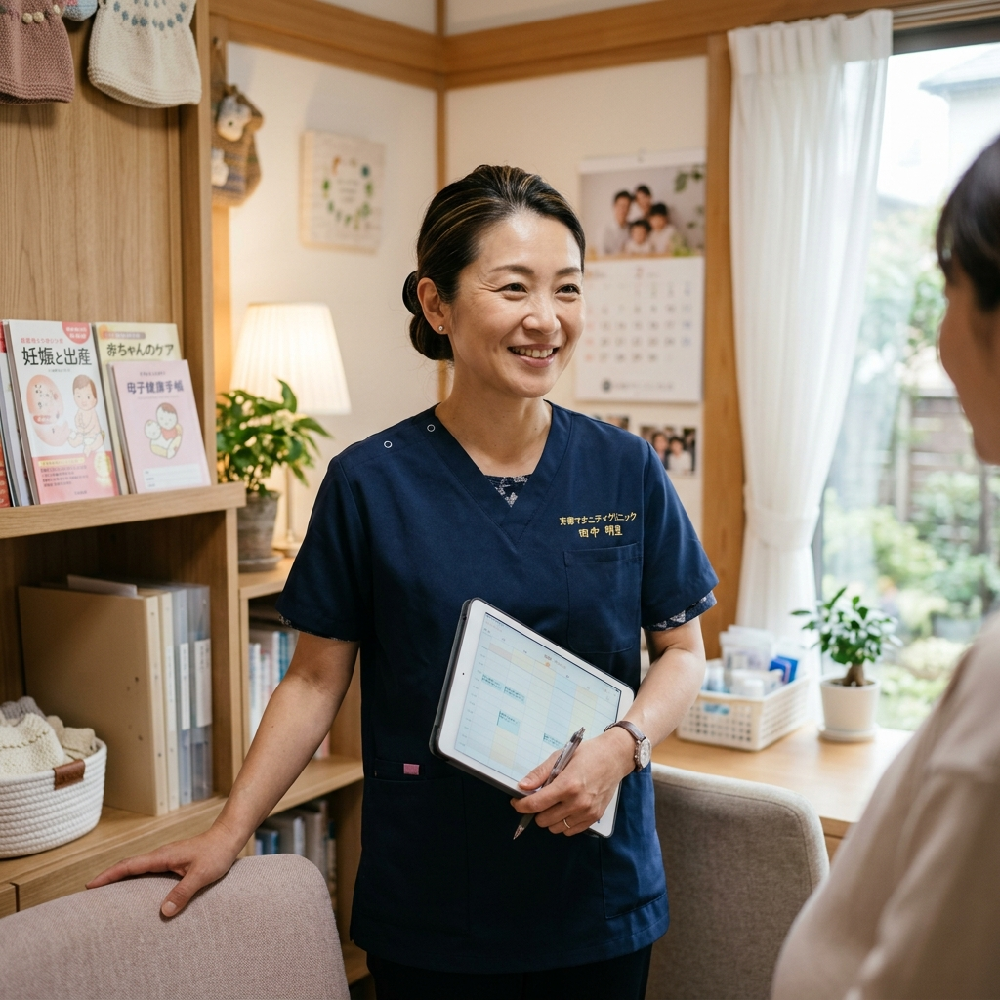

いのちの誕生に寄り添い、
あなた自身の人生も
大切にできる場所。
残業月平均4.2時間・有休消化率96%・産休育休復帰率100%。
病院からクリニックへ。時間に追われる看護から、
女性一人ひとりの笑顔と心を通わせる温かな看護をはじめませんか？
無理なく安心して続けられます。」

すべての女性の人生を支えるために、
まず「働くあなた」の幸せを大切に。
産婦人科は、いのちが生まれ、女性が人生の様々な局面と向き合う特別な場所です。
だからこそ、医療を届けるスタッフが笑顔で、心にゆとりを持てることが何よりも大切だと私たちは信じています。
桜井 恵子
Keiko Sakurai / M.D.
「患者様を大切にするように、一緒に働くスタッフを一番に大切にしたい」
大学病院や周産期センターで長年勤めた後、地域の女性に一生涯寄り添えるクリニックを作りたいと思い、この場所を開院しました。
病院時代の過酷な勤務や夜勤に疲弊し、大好きな看護を諦めてしまう仲間を多く見てきました。当院では「残業は極力ゼロにする」「有給は希望通りに取得する」という約束を徹底し、業務効率化や人員体制を整えています。
家庭や趣味、あなた自身の人生を豊かにしながら、いのちを育む素晴らしい医療を一緒に届けていきましょう。
田中 美智子
Michiko Tanaka / Nurse Manager
「産婦人科未経験でも大丈夫。私たちが手を取って大切に育てます」
「産婦人科に興味はあるけれど、特殊な領域で難しそう…」「急性期のスピードについていけずブランクがある…」そんな不安を抱えて応募される方が大勢いらっしゃいます。
安心してください。当院のスタッフの6割以上が産婦人科未経験からのスタートでした。プリセプター制度で先輩が必ず1対1でフォローし、一人ひとりの歩幅に合わせてお教えします。
ギスギスした人間関係は一切ありません。みんなで助け合う温かい病棟・外来の雰囲気を、ぜひ見学で肌で感じてみてください。
数字で知る、さくらレディースクリニック
求人票の文字だけでは伝わらない、実際の働きやすさや職場のリアルをデータで公開します。
17時半定時退社が基本。
仕事後の予定も安心！
連休取得や旅行も応援。
希望休が通りやすい環境
時短勤務や院内託児支援で
ママ看護師多数活躍
内科・外科・オペ室など
他科出身者が大半です
20代若手から40〜50代の
頼れるベテランまで在籍
院内アンケート調査。
「理不尽な人間関係ゼロ」
当院で働く、4つの大きな魅力
「大病院の忙しさに追われて、看護のやりがいを見失いそう…」
そんな方にこそ知ってほしい、当クリニックならではの働きやすさと温もりがあります。

命の誕生に立ち会い、
ご家族の「ありがとう」を一番近くで。
医療の中で唯一「おめでとうございます」と笑顔で声を掛け合えるのが産婦人科です。新しい命が誕生した瞬間のご家族の涙と笑顔、退院時の晴れやかな姿を見守るたび、看護師としてこの道を選んでよかったと心から実感できます。
時間に追われず、
一人ひとりと丁寧に向き合える看護。
大規模総合病院のような過密なルーチンや突発的な緊急搬送の連続とは異なり、クリニックだからこそ、患者様や産婦さんの不安な気持ちに耳を傾ける時間があります。「ゆっくり話を聞いてくれて安心した」という言葉が何よりの励みです。
残業月4h・夜勤なし相談OK。
家庭やプライベートと無理なく両立。
「子どもと夜ご飯を一緒に食べたい」「夕方からの趣味の時間を大切にしたい」など、人生の優先順位は人それぞれ。当院では日勤専従常勤や時短勤務、週3日からの扶養内パートなど柔軟な働き方を用意。急な子どもの発熱も快くフォローし合えます。
未経験・ブランクでも安心。
プリセプターが優しく寄り添う教育体制。
「産婦人科は経験がないから不安…」という方もご安心ください。業務マニュアルはすべてスマホやタブレットで確認でき、入職後は専任の教育担当がマンツーマンで指導。質問しやすい穏やかな人間関係が根付いているので、一人で抱え込むことはありません。
当院における看護師の仕事内容
ご希望の働き方やこれまでのご経験に応じて担当業務を決定します。
タブを切り替えて具体的な業務内容とやりがいをご覧ください。
外来看護（妊婦健診・婦人科一般）
妊娠初期から臨月までの妊婦健診、思春期から更年期まで幅広い女性の健康相談・婦人科診療の補助を行います。医師と患者様をつなぎ、不安な気持ちを和らげるカウンセリング的な役割も大切にしています。

1日の仕事の流れ
定時退社を徹底しているから、仕事終わりのプライベート時間もしっかり確保できます。
日勤スケジュールと病棟希望者向けの夜勤スケジュールをご紹介します。
夜勤担当スタッフから入院患者様の夜間状況や分娩進行状況の引き継ぎ。一日の動きを確認し、チームで笑顔のスタート！
【外来】妊婦健診や一般外来の医師診察補助、採血・問診。
【病棟】入院中のママと赤ちゃんの検温、授乳サポート、医師回診補助。
交代でしっかり休憩。無料のコーヒーやウォーターサーバー完備の広々としたスタッフルームで、雑談しながらリフレッシュ。
午後の外来診療対応。病棟では初産婦様への沐浴指導や、翌日退院されるご家族への退院指導、バースプランの相談などを実施。
電子カルテの入力確認、夜勤スタッフへの引き継ぎ。業務効率化によりカルテ記載もスムーズに完了します。
「お疲れ様でした！」と声を掛け合い退勤。駅チカなので買い物や習い事、お子さんのお迎えにもゆとりを持って向かえます。
先輩スタッフのリアルな声
総合病院から転職してきた看護師、未経験からスタートした看護師、子育てと両立する助産師。
当院を選んだ理由や、普段の職場の雰囲気を聞いてみました。

総合病院から転職 / 入職2年目佐藤 綾香さん（32歳）
以前は大学病院で夜勤も多く、子育てとの両立に限界を感じていました。日勤のみで定時に帰れる環境を探し、当院の温かな理念に惹かれて応募しました。
17時半にしっかり退勤できるので、子どもと一緒に夕飯を食べられる毎日が本当に幸せです。急な発熱でも「早く行ってあげて！」とみんなが快く代わってくれます。
高橋 真理子さん（27歳）
整形外科出身で母性看護の経験が全くなかったので最初は緊張しましたが、プリセプターの先輩がマンツーマンで手順を一つずつ教えてくださり、自然と自信がつきました。
初めて分娩に立ち会ったとき、生まれた赤ちゃんの産声を聞いて感動で涙が出ました。ご家族の幸せな門出に寄り添える特別な仕事だと実感しています。

助産師リーダー / 入職6年目伊藤 恵子さん（41歳）
院長がとても穏やかでスタッフ想いなので、現場の雰囲気も自然と和やかです。「新人を放置しない」「みんなで助け合う」が当たり前の文化になっています。
ブランクがある方も、他科からの挑戦も全力で歓迎します。まずは見学に来て、スタッフたちの自然な笑顔とクリニックの温かさを見てみてください！
まるでホテルのような安らぎと、働きやすい環境
患者様がリラックスして過ごせる上質な空間づくりはもちろん、
スタッフが快適に休息・業務を行える最新設備とスタッフルームを完備しています。

明るく清潔な待合ラウンジ
自然光が差し込むあたたかな木目調の内装。アロマが優しく香り、患者様もスタッフも穏やかな気持ちで過ごせます。

最新設備を整えたLDR室
陣痛から分娩、回復までを1室で過ごせる最新LDR。安全な医療機器の配置と使いやすい動線設計が自慢です。

ホテルライクな全室個室
母児同室でも落ち着いて過ごせる防音完備の個室。ナースステーションからの見守りもしやすいレイアウトです。

快適なカフェ風休憩室
無料ドリンクバー、電子レンジ、リクライニングソファ、個別ロッカー完備。業務と休憩のメリハリがしっかりつきます。
未経験・ブランクでも安心の教育サポート体制
「いきなり一人で任せる」ことは絶対にありません。
あなたの経験や習熟度に合わせて、ステップバイステップで着実に成長できる環境を整えています。
オリエンテーション＆見守りサポート
まずはクリニックの理念や電子カルテの操作、院内ルールを把握。専任のプリセプター（教育係）が常に行動を共にし、業務の見学からスタートします。
- 電子カルテ・院内機器のレクチャー
- 先輩の業務見学・シャドーイング
- 週1回の振り返り面談で不安解消
実践フォロー＆独り立ち支援
先輩のフォローを受けながら、基本的な外来補助や病棟ケアを実践。できることを少しずつ増やしていき、無理のないペースで自信を深めていきます。
- 妊婦健診補助・採血・処置の実践
- 新生児ケア・授乳指導の独り立ち
- マニュアルのデジタル確認で自己学習
スキルアップ＆キャリア支援
一通りの業務が安心してできるようになってからも、外部研修の参加費全額補助や資格取得支援（アドバンス助産師等）であなたの目指すキャリアを全力後押しします。
- 院外研修・学会参加費用の全額補助
- 資格取得手当（月額手当プラス支給）
- ライフステージに応じた働き方の見直し相談
安心して長く働ける、充実の福利厚生
スタッフ一人ひとりが生活や将来に不安なく、健やかに働ける環境を用意しています。
賞与年2回（前年4.2ヶ月）
日頃の頑張りをしっかりと還元。昇給も年1回実績に応じて着実に行われます。
完全週休2日・年間休日122日
シフト制で希望休もしっかり考慮。有休消化率96%以上で連休取得も大歓迎です。
住宅手当＆交通費全額支給
世帯主向けの住宅手当（月25,000円）を支給。通勤交通費は上限なしで全額支給します。
院内託児支援＆育児時短勤務
提携保育園の優先利用や保育補助金を支給。小学校入学まで時短勤務が可能です。
健康診断＆婦人科検診無料
定期健診に加え、子宮頸がん・乳がん検診などの婦人科診療やワクチン接種を無料提供。
退職金制度＆社会保険完備
勤続3年以上で退職金制度適用。制服・シューズの無料貸与（クリーニング院内負担）あり。
募集要項
常勤（正職員）およびパート・アルバイトを募集しています。
勤務日数や時間帯など、ご希望に応じて柔軟にご相談いただけます。
① 正看護師 ② 助産師 ③ 准看護師
※外来専任、病棟専任、または兼任。希望や経験を考慮して決定します。
【常勤】正職員（日勤のみ常勤、または夜勤あり常勤）
【非常勤】パート・アルバイト（週2日〜、1日4時間〜、扶養内相談可）
※これまでの看護臨床経験年数・スキルを考慮の上、優遇決定します。
※夜勤手当：1回 15,000円〜18,000円、住宅手当：月25,000円、資格手当、職務手当、通勤手当全額支給。
【日勤】08:30 〜 17:30（休憩60分）
【夜勤】16:30 〜 翌09:00（休憩・仮眠120分）※夜勤なしの日勤専従OK
※パートは上記時間内で「午前のみ」「15時まで」等柔軟にご相談可能です。
完全週休2日制（年間休日122日以上）
年次有給休暇（有休消化率96%以上）、夏季休暇（3日）、年末年始休暇（4日）、産前産後休暇、育児休業、慶弔休暇、リフレッシュ休暇
看護師・准看護師、または助産師免許をお持ちの方
★産婦人科未経験の方、ブランクのある方も大歓迎です！
★人柄と「温かい医療を届けたい」というお気持ちを最重視しています。
さくらレディース＆マタニティクリニック
東京都世田谷区桜丘2-15-8（最寄り駅：小田急線「千歳船橋駅」南口より徒歩3分）
※マイカー通勤・自転車通勤応相談（駐輪場完備）
応募から入職までの流れ
「まずは職場の雰囲気を見てみたい」という見学のみのお申し込みも大歓迎です！
エントリー or 見学予約
WEBフォームまたは公式LINEより、お気軽にお申し込みください。1分で入力完了します。
院内見学・カジュアル相談
私服でOK・履歴書不要！約30分で実際の病棟やスタッフの様子を見学。何でも気軽にご質問ください。
面接（1回のみ）
院長・看護部長との面接を行います。これまでのご経験やお互いの希望についてゆっくりお話ししましょう。
内定・ご入職
面接後3日以内に合否をご連絡。入職時期は現在在職中の方も含め、ご都合に合わせて柔軟に調整します。
よくあるご質問
求職者の皆様からよくいただく疑問や不安にお答えします。
クリニック概要・アクセス
新宿駅・渋谷駅方面からも電車で約20分。駅チカなので雨の日も安心です。